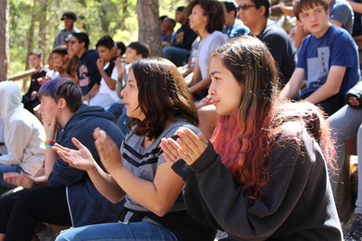
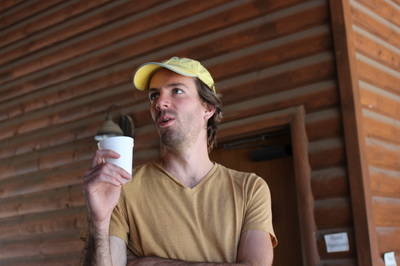
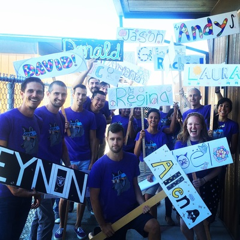

School Days Should Be Shorter
Claim
Many students can agree that school days are too long. We spend around 7 or 8 hours a day sitting in front of computer screens or behind desks, typing or writing, with only 30 minutes to an hour of break time to eat or play.
When school ends, we go home just to repeat the same process. We sit at our desks, or maybe the kitchen table, typing essays, solving math problems, taking notes, flipping through flash cards for an upcoming test, or reading.
We often have very little time to play sports, practice musical instruments, hang out with our families, go on social media, or do anything leisurely. Once dinner passes, it's back homework we go.
More often than not, teenagers are getting 7 hours of sleep, 2 hours less than the recommended 9 (or more) hours of sleep, according to Children Nationwide's. They stated that sleep depravation can lead to change in mood, behavior, cognitive ability, and academic performance. It can also cause drowsy driving, which teenager's are at the highest risk for.
School days should be shorter because student's have too much to do in the ammount of time given. Say a student's school day ends at 4 pm, but they have sports from 4-6. If they're given 5 hours worth of homework to do that night, they're easily staying up until at least 11pm, only to have to wake up at 5, 6, or 7am the next day.
School days should be shorter because students need more time to themselves and more time to sleep to be happier, healthier, and smarter.


